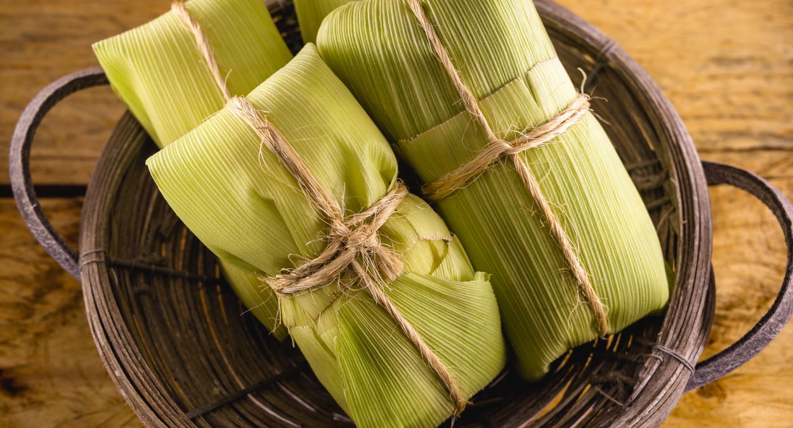

O milho (Zea mays) é originário da região do México e foi domesticado há mais de 7.000 anos por povos indígenas.
Com o tempo, espalhou-se por toda a América e depois para o mundo inteiro.
Plantio e Época
O milho é cultivado em regiões tropicais e subtropicais. No Brasil, o plantio ocorre entre setembro e dezembro
(safra principal) e entre janeiro e março (safrinha). A planta precisa de clima quente e solo fértil.
Clima quente
Solo fértil
Colheita entre 90 e 120 dias
Floração
A floração ocorre entre 50 e 70 dias após o plantio. O milho possui flores masculinas no topo e femininas na espiga,
e a polinização acontece pelo vento.
Espécies
Milho doce
Milho duro
Milho dentado
Milho pipoca
Composição Nutricional
Nutriente
Quantidade (100g)
Calorias
86 kcal
Carboidratos
19 g
Proteínas
3 g
Fibras
2,7 g
Benefícios
Fonte de energia
Auxilia na digestão
Rico em vitaminas do complexo B
Ajuda na saúde intestinal
Receitas
Bolo de Milho
Ingredientes:
2 xícaras de milho
1 xícara de açúcar
3 ovos
1 xícara de leite
Modo de preparo:
Bata os ingredientes no liquidificador, coloque em uma forma e asse por 40 minutos a 180°C.
Pamonha

Ingredientes:
Milho verde
Açúcar
Leite
Modo de preparo:
Misture os ingredientes, coloque na palha e cozinhe por 40 minutos.
Curau
Ingredientes:
Milho
Leite
Açúcar
Modo de preparo:
Bata o milho com leite, coe e leve ao fogo até engrossar.